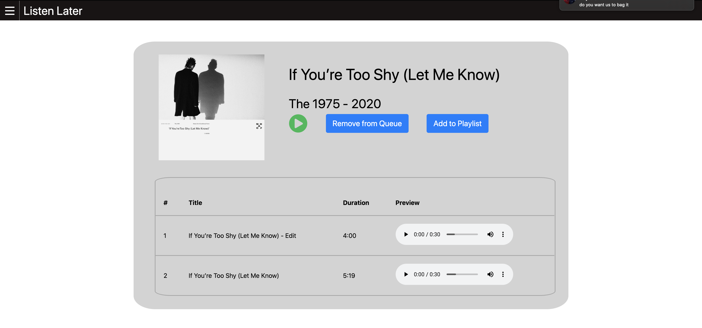

My Work
Check out some of my projects...

Listen-Later is an online application which uses Angular, Firebase, and the Spotify API to allow users to add albums to a queue to remember what they want to listen to later.
Listen-Later Github